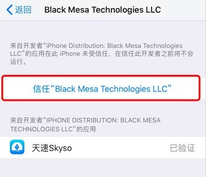
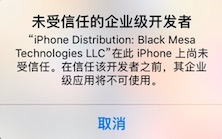

2.进入描述文件与设备管理,信任证书
请在Skyso下载完毕后
请安图示,信任Skyso证书

听国内音乐,看国内视频,玩国服游戏,用天速Skyso
没有外国区账号的用户,可以根据本页面中的安装引导指南进行下载
注:如果您点击按钮没有反应,请使用Safari浏览器访问官网(http://www.skyso.cc)下载
下载成功之后,请按以下步骤进行操作,否则将会出现
请在Skyso下载完毕后
请安图示,信任Skyso证书
现在,您可以正常的使用Skyso服务了
您也可以访问Skyso的官网:www.skyso.cc 下载各客户端
Skyso 祝您生活愉快